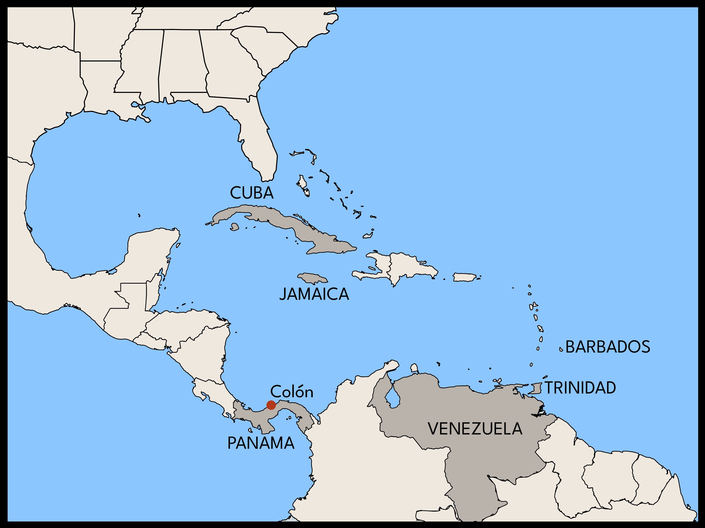

Q: What role did Black people from the British Caribbean play in the Jazz Age?
A: Migration patterns and the record business made them central.
Before the Johnson-Reed Act of 1924 imposed strict immigration quotas, West Indian migrants poured into American cities such as New York and Boston. An average of 3,500 Black people from the Caribbean immigrated to the United States each year from 1903 to 1913, and the number jumped to 5,000 per year over the following decade. These migrants forged vibrant communities, notably in the African American neighborhood of Harlem. One sign of their influence was the prominence of the Jamaican, Black nationalist activist Marcus Garvey and his United Negro Improvement Association (UNIA). But Black Caribbean migrants had a musical impact as well. Not only did they represent a significant market for recordings of West Indian music, but their musical sensibilities also directly influenced the new music known as jazz.

The islands of the West Indies together with the "rim lands" on the Caribbean coast of Central America comprised an extremely cosmopolitan region characterized by high rates of migration and exposure to the latest trends in global popular culture. These aspects are visible in the life of the jazz pianist and bandleader Luis Russell, who was born in Panama to a Jamaican family. The Russells were part of an enormous wave of Jamaican migrants who came to work on the plantations of the United Fruit Company and in the construction of the Panama Canal. Russell's father was a white-collar worker, and Luis received a first-rate musical education. By the age of 16, he was leading a six-piece band in the port city of Colón. He would ask the American sailors who passed through for the titles of the latest hits and then order the sheet music from New York. One of these was the "Tiger Rag," an early New Orleans jazz tune recorded by the Original Dixieland Jazz Band.


When Russell moved to New Orleans in 1921 at the age of 19, he had already developed a wide-ranging familiarity with the "hot" dance musics of the day: jazz, but also mento, calypso, and other Caribbean genres. This background eased his entree into the musical world of Black New Orleans, which had long-standing connections to the Caribbean. From there, Russell went on to help create the swing jazz that would sweep the world in the 1930s. He moved to Chicago in 1925 to play in King Oliver's band, led his own popular dance band in New York in the late 1920s, and spent more than a decade backing Louis Armstrong.
Like Luis Russell, audiences throughout the Caribbean danced to American jazz alongside local genres, considering them all versions of the same thing: exciting new dance music. West Indian immigrants infused these cosmopolitan sensibilities into the booming music scene in Harlem. Two of the neighborhood's most important music venues had direct Caribbean ties: the Savoy Ballroom, long managed by the Barbados-born Charles Buchanon, and the Renaissance Casino and Ballroom, or Renny, founded in 1915 by three West Indian partners. Alongside bands led by Louis Armstrong, Fletcher Henderson and many others, the house band at the "Renny" was led for some 27 years by Vernon Andrade, who, like Russell, was born in Panama in 1902.


Unlike the nearby Cotton Club with its all-white clientele, the Renny catered to an African American and Afro-Caribbean audience. Andrade's band routinely performed at events hosted by West Indian benevolent societies and political organizations, often playing Jamaican, Cuban, and Trinidadian tunes. But his band also played hot jazz, providing the soundtrack for the innovative dancers who created the Lindy Hop, many of whom were themselves Afro-Caribbean. As the trombonist Clyde Bernhardt remembered, Andrade "knew how to call a set; usually four songs, different tempos, maybe a waltz, then a sweet number, a calypso, and then a hot number."

Calypsos went over well with Andrade's audience at the Renny not only because there were Afro-Caribbean people among the patrons, but also because the record industry had long promoted West Indian music locally. The first recordings of popular music from the British Caribbean were made in 1912, when Victor and Columbia recorded Lovey's String Band, a group from Trinidad then on tour in the United States. By 1914, the label had established a relationship with Trinidadian pianist and band leader Lionel Belasco, who moved to New York in 1915 and recorded extensively over the next 35 years. A trained musician of mixed race, Belasco played the waltzes and paseos that reflected Trinidad's close connection to Venezuela, but he also recorded refined versions of the calypsos and calendas sung by Black Trinidadians during Carnival. At right, you can hear Belasco's band accompanying the calypso singer Wilmoth Houdini on "Good Night Ladies and Gents" as well as Julian Whiterose's "Iron Duke in the Land," one of the first recordings of calypso, recorded in Trinidad in 1914.

One of the most popular Trinidadian singers in New York was Sam Manning, who arrived in the city in the early 1920s and enjoyed success on Harlem stages with an act that poked gentle fun at recent West Indian immigrants. Between 1924 and 1928, Manning made nearly 40 recordings for OKeh, Columbia, Paramount, and Brunswick. His records were aimed at West Indian audiences both in the islands and in the U.S., but they were also often included in race record catalogs aimed at African American consumers. "Susan Monkey Walk," from his first session for OKeh, partially subverts the most common insult aimed at West Indians — "monkey chaser" — by describing the recent arrival's "monkey walk" as the latest fad in Harlem. The following year, Manning recorded "Sly Mongoose," a Jamaican folk tune that became a carnival hit in Trinidad in 1923 and was one of the best-known West Indian tunes in the United States. "Sly Mongoose," a song that celebrates a crafty Caribbean migrant, would go on to be recorded by such jazz luminaries as Louis Armstrong, Benny Goodman, and Charlie Parker. Given Harlem's status as a crossroads of the African diaspora, it is no surprise that jazz musicians would include an Afro-Caribbean melody among their source material.
To learn more:
-
Lara Putnam, Radical Moves: Caribbean Migrants and the Politics of Race in the Jazz Age (University of North Carolina Press, 2013
-
Paul N. Kahn, "Call of The Freaks: Luis Russell & Louis Armstrong, Musical Pals, An Illustrated History," (PhD dissertation, Newark Rutgers, 2018).
-
John Cowley, "West Indies Blues: an historical overview 1920s-1950s — blues and music from the English-speaking West Indies," in Robert Springer, ed., Nobody Knows Where the Blues Came From: Lyrics and History (University Press of Mississippi, 2006), 187-263
Find even more on this topic in our bibliography.